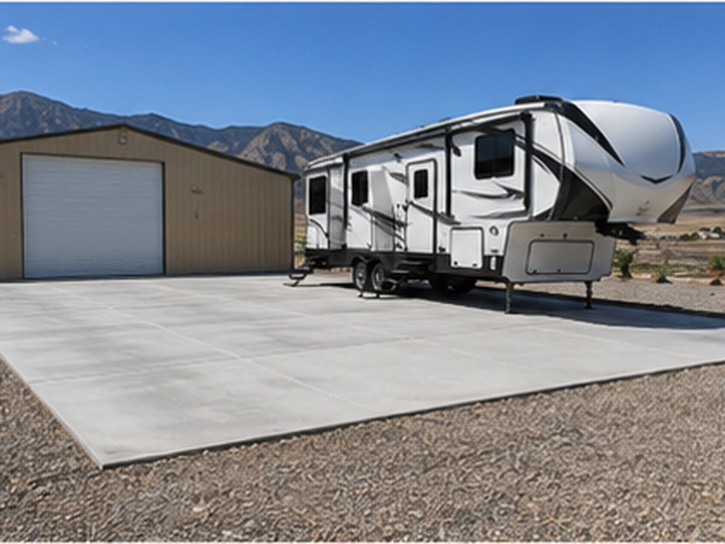

Concrete Cost in Logan, UT
Concrete cost in Logan, UT usually runs about $6 to $12 per square foot for a plain slab and $7 to $16 for a driveway. Here are 2026 price ranges for driveways, patios, stamped concrete, RV pads and repair, and how to get free quotes from local Cache Valley contractors.

How Much Does Concrete Cost in Logan, UT?
If you are pricing concrete cost in Logan, Utah, plan on about $6 to $12 per square foot for a plain installed slab and about $7 to $16 per square foot for a typical concrete driveway. These are general 2026 ranges drawn from national and Utah cost guides. Stamped and decorative concrete runs higher, and removing old concrete adds about $2 to $5 per square foot. Your actual price depends on your site, so the next step is getting free written quotes from local contractors. Cache County Concrete is a free referral service that connects Logan and Cache Valley homeowners with licensed local contractors.
Concrete Cost per Square Foot by Project
Patios and walkways. A broom-finish patio or walkway generally runs about $6 to $12 per square foot installed. A 12 by 16 foot patio (192 sq ft) is often $1,500 to $3,000, and a 20 by 20 foot patio (400 sq ft) is often $3,200 to $6,000. See concrete patios in Logan.
Driveways. Driveways cost a little more because they need more base and reinforcement and often require removing the old slab. Expect roughly $7 to $16 per square foot. A single-car driveway of about 300 sq ft often runs $2,400 to $4,500, and a two-car driveway of about 600 sq ft is often $4,500 to $9,500. See concrete driveways in Logan.
Stamped and decorative concrete. Stamped concrete generally runs about $12 to $25 per square foot, and exposed aggregate about $8 to $18. A 300 sq ft stamped patio often lands around $3,600 to $7,500. See stamped concrete in Logan.
RV pads and parking pads. A 6-inch reinforced RV pad usually runs about $6 to $12 per square foot or more. A 12 by 45 foot pad (540 sq ft) is often $3,500 to $7,000. See concrete RV pads in Logan.
Shed, garage and shop slabs. A 12 by 16 foot shed slab often runs $1,300 to $2,500, and a 24 by 24 foot garage slab with thickened edges is often $5,000 to $9,000. Basement and house foundations are priced from plans. See foundations and slabs.
Leveling and repair. Raising a sunken slab usually costs $3 to $8 per square foot with slurry, or about $5 to $25 with polyurethane foam. Most jobs total $500 to $3,000, often a quarter to half of what replacement would cost. See concrete repair and leveling.
Commercial flatwork. Commercial sidewalks, pads and parking areas generally run about $8 to $15 per square foot. See commercial concrete in Logan.
Concrete Price per Yard in Utah
If you are buying concrete yourself, ready-mix in Utah generally runs about $125 to $180 per cubic yard delivered in 2026. Most suppliers add a short-load fee for small orders, and there can be extra charges for fiber, accelerators or weekend delivery. One cubic yard covers about 81 square feet at 4 inches thick, or about 54 square feet at 6 inches. Material is only about 40 percent of an installed job. The rest is excavation, base gravel, forms, rebar, finishing labor, cleanup and the contractor's warranty.
What Changes the Price of Concrete in Cache Valley
- Size. Larger jobs cost less per square foot, and small jobs often hit a minimum charge.
- Tear-out. Breaking up and hauling away old concrete or asphalt adds about $2 to $5 per square foot.
- Thickness and steel. Going from 4 to 6 inches adds about 50 percent more concrete, and rebar adds labor.
- Base and soil. Clay and wet ground on the valley floor may need deeper gravel, and bench lots can hit rock.
- Finish. Broom finish is the least expensive. Exposed aggregate, color and stamping cost more.
- Access and slope. Backyards that need a pump truck or wheelbarrows, and hillside lots, cost more.
- Permits and city work. Driveway approaches and sidewalks in Logan City right-of-way need permits and city specs.
- Season. Cold-weather pours need blankets, heat or accelerators.
Logan Ground Conditions: Why Base Prep Matters Here
Logan sits around 4,500 feet on the floor of Cache Valley, and the ground changes a lot from one neighborhood to the next. The benches on the east side, up toward the university, Hyde Park and River Heights, tend to have rocky, gravelly soil that drains well but can need more excavation. Lower ground west of Main Street and out toward the Logan River bottoms often has silty or clay soil that holds water, and that is where poorly built slabs heave and settle. Frost here reaches roughly 30 inches deep, and slabs go through dozens of freeze-thaw cycles each winter. Long rural driveways in Smithfield, Hyrum and Nibley add length, grading and drainage work. These are the reasons a good Logan contractor looks at your site before pricing it, and why the base depth, compaction and drainage plan in a quote matter as much as the concrete itself.
Is Concrete Cheaper in Logan?
Published cost data puts Logan slightly below the Utah average, a few percent under Salt Lake City and Ogden, mostly because of lower overhead and shorter drive times. In practice, your site matters more than your zip code. A flat, easy-to-reach front-yard pour in North Logan can cost noticeably less per foot than a hillside backyard patio in River Heights or Hyde Park. The only way to know your number is a free on-site quote, ideally from two or three contractors.
Last updated October 2026. Prices on this page are general planning ranges from published cost guides and local market information. They are not quotes or offers from Cache County Concrete, which does not perform concrete work.
How to Compare Written Concrete Quotes in Logan
Once you have two or three written quotes from local contractors, compare them line by line instead of looking only at the total. A lower number often means something was left out. Check that each quote states the gravel base depth and how it will be compacted, the slab thickness, and the reinforcement (rebar size and spacing, wire mesh or fiber). Look for an air-entrained mix, which is what holds up to Cache Valley freeze-thaw, along with the strength (usually 4,000 PSI or more for exterior work). The quote should also cover control joint spacing, the finish, tear-out and haul-off of old concrete, any permit or city apron work, cleanup, and the written warranty. If one quote leaves an item blank, ask that contractor to add it in writing so you are comparing the same job. Homeowners in Logan, River Heights, Hyde Park, North Logan and Providence all get the same free referral and the same advice: the best value is the quote that spells out the work, not the cheapest one.
Concrete Cost in Logan, UT FAQ
How much does concrete cost per square foot in Logan, UT?
Most installed residential concrete in Logan and Cache Valley runs about $6 to $12 per square foot for a plain broom-finish slab, and $7 to $16 for driveways that need thicker concrete or tear-out. Decorative and stamped work runs higher. Last updated October 2026.
How much does a yard of concrete cost in Utah?
Ready-mix concrete delivered in Utah generally runs about $125 to $180 per cubic yard in 2026, before labor, forms, rebar and finishing, plus short-load fees on small orders. One cubic yard covers about 81 square feet at 4 inches thick.
How much does a 20x20 concrete slab cost?
A 20 by 20 foot slab is 400 square feet. At 4 inches thick with a broom finish, it often runs about $2,400 to $4,800 installed in Logan, and more at 6 inches or with tear-out.
Is concrete cheaper in Logan than Salt Lake City?
Published cost data puts Logan a few percent below the Utah average and slightly below Salt Lake City, but site conditions matter more than the city. Compare at least two local written quotes.
Why do concrete quotes vary so much?
Quotes differ in base depth, thickness, reinforcement, mix, joint layout, tear-out and finish. The lowest number often leaves something out. Compare each quote item by item.
When is the cheapest time to pour concrete in Cache Valley?
Early spring and late fall can have more open schedules, but cold-weather pours need blankets or heat, which add cost. The best value is usually booking spring or summer work early.
Please note: Cache County Concrete is a free lead-referral and information service, not a licensed contractor, and does not perform concrete work. All quotes and work are provided by independent, licensed local contractors. Verify licensing and insurance directly with the contractor before any work begins.
Get a Real Number for Your Project
Tell us about your project, and we’ll work to connect you with a licensed local concrete contractor in Cache Valley for a free, no-obligation written quote.